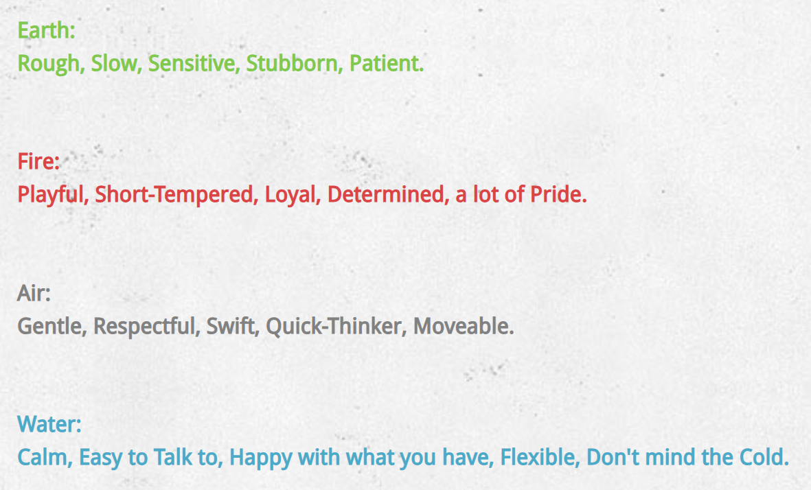

Matching with an Element
Personality traits relating to each element from Avatar: The Last Airbender. Source.
Background
I admit I have not watched Avatar: The Last Airbender, but I have done some research to get an idea of the four elements and how they relate to personality traits. The list above shows these personality traits. Choosing just one element was difficult because I matched with multiple elements. I settled upon the air element as the element that matches me most. Despite this, I will still talk about some of the other elements that also apply to me.
The water element from Avatar: The Last Airbender
Rhetorical Strategies
When I think of water, I think of its ability to flow freely. This gives me a sense that the water element is calm. I also have some connotations when I think about fire. I imagine fire as a raging persistent passion. It is the opposite of calm, and it can involve violence. Air is calm mostly like water, but air seems more in control of its movements. In comparison, water goes with the flow. Lastly, earth seems like a slow-moving element, since it is the only solid element. These intuitive descriptions match the personality traits listed earlier. To control these elements, a person must fit the corresponding personality traits.
Identity
I embody the air element more and more as I mature. I match with the calmness of the air element since I do not like to argue or be aggressive. I have not always been calm; I used to have tantrums like most children, and I also remember getting upset when losing in video games. Just because I am calm does not mean that I "go with the flow," since that trait is involved with water. I prefer to go "against the flow" of society. I am constantly searching for ways that I can be unique. This represents the agility of air, as it can move any way it chooses without being affected by outside forces. Along with air, I sometimes have moments of passion which can be represented by the fire element. I also can be a perfectionist sometimes with school assignments, resulting in me being slow-moving just like the earth element.
An Argument for Air
If I had to argue that air was the best of the four elements, I would first point out the key difference between air and water. The two are calm elements, but they differ because people of the water element can be influenced by society, while people of the air element are better at thinking individually. I believe that individualism is best because it adds variety to the world, and it just feels nice to create something unique. Air is also similar to the earth element, but they differ in speed. Air is fast while the earth element is slow. When thinking in terms of problem-solving, I admit that being slow can help to avoid errors. However, mistakes are a common part of problem-solving and should be accepted. This means that it is better to solve problems quickly so that more mistakes can be learned from. I code often and make plenty of mistakes, but it is very normal and I can rapidly fix my mistakes. Lastly, how does air compare to fire? Fire is associated with more passion than air, however, I argue that fire involves too much passion. This could lead to aggression. Air is the perfect balance of passion and smarts.